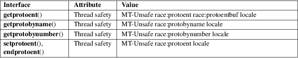

getprotoent, getprotobyname, getprotobynumber, setprotoent, endprotoent − get protocol entry
Standard C library (libc, −lc)
#include <netdb.h>
struct protoent *getprotoent(void);
struct
protoent *getprotobyname(const char *name);
struct protoent *getprotobynumber(int
proto);
void
setprotoent(int stayopen);
void endprotoent(void);
The getprotoent() function reads the next entry from the protocols database (see protocols(5)) and returns a protoent structure containing the broken-out fields from the entry. A connection is opened to the database if necessary.
The getprotobyname() function returns a protoent structure for the entry from the database that matches the protocol name name. A connection is opened to the database if necessary.
The getprotobynumber() function returns a protoent structure for the entry from the database that matches the protocol number number. A connection is opened to the database if necessary.
The setprotoent() function opens a connection to the database, and sets the next entry to the first entry. If stayopen is nonzero, then the connection to the database will not be closed between calls to one of the getproto*() functions.
The endprotoent() function closes the connection to the database.
The protoent structure is defined in <netdb.h> as follows:
struct protoent
{
char *p_name; /* official protocol name */
char **p_aliases; /* alias list */
int p_proto; /* protocol number */
}
The members of the protoent structure are:
|
p_name |
The official name of the protocol. |
p_aliases
A NULL-terminated list of alternative names for the protocol.
p_proto
The protocol number.
The getprotoent(), getprotobyname(), and getprotobynumber() functions return a pointer to a statically allocated protoent structure, or a null pointer if an error occurs or the end of the file is reached.
/etc/protocols
protocol database file
For an explanation of the terms used in this section, see attributes(7).

In the above table, protoent in race:protoent signifies that if any of the functions setprotoent(), getprotoent(), or endprotoent() are used in parallel in different threads of a program, then data races could occur.
POSIX.1-2008.
POSIX.1-2001, 4.3BSD.
getnetent(3), getprotoent_r(3), getservent(3), protocols(5)